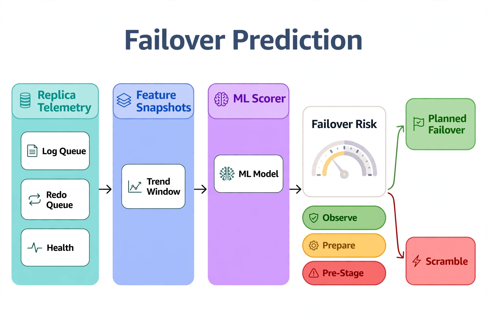

Chapter 23: AI for High Availability and Disaster Recovery
Your availability groups are configured, your backups run on schedule, and your runbooks describe the failover procedure. That is the base technology, and this chapter assumes you already own it. The problem AI solves in HA/DR is different: decisions under uncertainty. Should you fail over now or wait out the transient? If the primary dies in the next hour, which replica gives you the smallest data loss? Is your actual RPO still inside the SLA your business signed, or has log throughput growth silently pushed you outside it? These are prediction and estimation problems — exactly the shape of problem machine learning handles well. This chapter builds three models: a failover-need predictor that scores the probability a failover will be required in the coming window, an RPO/RTO estimator that turns replica telemetry into continuously updated recovery objectives, and an LLM-assisted failover readiness assessment that replaces the 3 AM gut check with a scored, evidence-backed recommendation.
---
Failover Prediction: Scoring the Probability You'll Need to Fail Over

Read it left to right. The teal Replica Telemetry zone is raw AG signals — log send queue, redo queue, replica health — the same DMVs you'd query by hand at 3 AM. The blue Feature Snapshots zone turns those point-in-time readings into trend windows, because a queue that's growing matters more than a queue that's merely large. The violet ML Scorer outputs a single number: failover risk. That number lands in one of three colored bands — green Observe (carry on), amber Prepare (stage the runbook, warn the team), red Pre-Stage (begin the planned failover while you still have the choice). The two paths on the right are the whole point: a high score buys you the green Planned Failover path instead of the red Scramble. The key insight: prediction isn't about being right every time, it's about converting surprise failovers into scheduled ones.
Most failovers are reactive: something breaks, the cluster reacts, humans scramble. But the telemetry that precedes an unplanned failover — degrading replica health, growing redo queues, repeated connection timeouts to the primary, escalating wait stats — is visible minutes to hours before the event. A failover prediction model turns that telemetry into a probability score: P(failover needed within the next N minutes), refreshed continuously.
The training data is your own history. Every past unplanned failover is a positive label; every uneventful hour is a negative. The features come from the DMVs you already monitor — not as a tutorial, but as model inputs:
-- Feature snapshot for the failover prediction model.
-- Run every 5 minutes; each row becomes one training/prediction sample.
SELECT
SYSUTCDATETIME() AS snapshot_time,
-- Replica health signals
ars.role_desc,
ars.operational_state_desc,
ars.connected_state_desc,
ars.recovery_health_desc,
ars.synchronization_health_desc,
-- Data-loss exposure signals
drs.log_send_queue_size,
drs.log_send_rate,
drs.redo_queue_size,
drs.redo_rate,
drs.last_commit_time,
DATEDIFF(SECOND, drs.last_commit_time, SYSUTCDATETIME()) AS seconds_since_last_commit,
-- Instance pressure signals correlated with past failovers
(SELECT SUM(wait_time_ms) FROM sys.dm_os_wait_stats
WHERE wait_type IN ('HADR_SYNC_COMMIT','HADR_DB_COMMIT_MGR_UPDATE_HARDENED_LSN',
'HADR_LOGCAPTURE_SYNC','HADR_WORK_QUEUE')) AS hadr_wait_ms,
(SELECT COUNT(*) FROM sys.dm_exec_requests
WHERE wait_type LIKE 'HADR%' AND wait_time > 5000) AS hadr_blocked_requests,
(SELECT AVG(100.0 * (1.0 - CAST(signal_wait_time_ms AS FLOAT)
/ NULLIF(wait_time_ms, 0)))
FROM sys.dm_os_wait_stats) AS cpu_pressure_proxy
FROM sys.dm_hadr_availability_replica_states ars
JOIN sys.dm_hadr_database_replica_states drs
ON drs.replica_id = ars.replica_id
WHERE drs.is_local = 1;Label each historical snapshot with whether an unplanned failover occurred within the following 60 minutes (join against the cluster event log or your incident records). Then train a gradient boosting classifier — the same family of model from Chapter 10's maintenance scheduler, now pointed at a binary outcome:
import pandas as pd
import pyodbc
from sklearn.ensemble import HistGradientBoostingClassifier
from sklearn.model_selection import TimeSeriesSplit
from sklearn.metrics import precision_recall_curve
def train_failover_predictor(conn_str: str, horizon_minutes: int = 60):
"""
Predict P(unplanned failover within horizon) from replica telemetry.
Labels come from joining snapshots to the incident/failover event log.
"""
conn = pyodbc.connect(conn_str)
df = pd.read_sql("""
SELECT s.*,
CASE WHEN EXISTS (
SELECT 1 FROM dba.failover_events f
WHERE f.event_time > s.snapshot_time
AND f.event_time <= DATEADD(MINUTE, %d, s.snapshot_time)
AND f.was_planned = 0
) THEN 1 ELSE 0 END AS failover_within_horizon
FROM dba.ha_telemetry_snapshots s
ORDER BY s.snapshot_time;
""" % horizon_minutes, conn)
conn.close()
feature_cols = ['log_send_queue_size', 'log_send_rate', 'redo_queue_size',
'redo_rate', 'seconds_since_last_commit', 'hadr_wait_ms',
'hadr_blocked_requests', 'cpu_pressure_proxy']
X = df[feature_cols].fillna(0)
y = df['failover_within_horizon']
# TimeSeriesSplit: no peeking into the future during validation
model = HistGradientBoostingClassifier(
max_iter=300, learning_rate=0.05, max_depth=5, random_state=42)
tss = TimeSeriesSplit(n_splits=5)
for train_idx, test_idx in tss.split(X):
model.fit(X.iloc[train_idx], y.iloc[train_idx])
# Choose the operating threshold from the precision-recall tradeoff,
# not from a default 0.5. Failover prediction wants high recall:
# a false alarm costs a readiness check; a missed prediction costs an outage.
proba = model.predict_proba(X)[:, 1]
precision, recall, thresholds = precision_recall_curve(y, proba)
# Pick the threshold achieving >= 0.85 recall with best precision
candidates = [(t, p) for t, p, r in zip(thresholds, precision, recall)
if r >= 0.85]
threshold = max(candidates, key=lambda x: x[1])[0] if candidates else 0.3
return model, feature_cols, float(threshold)The operating threshold choice is the most important decision in this model. A failover predictor is an early-warning system, and early-warning systems should be tuned for recall: you would rather investigate three false alarms than miss the one real precursor. Start with a threshold that yields at least 85% recall on backtested data, wire the alert to trigger a readiness assessment (next section's LLM pipeline) rather than a page, and tighten only after you have measured the false-alarm cost in your environment.
---
Continuous RPO/RTO Estimation from Replica Telemetry
Your RPO and RTO are not the numbers in the architecture document. They are functions of current replica lag, current log generation rate, and current redo throughput — all of which drift as workloads change. A database that met a 5-minute RPO at design time can silently violate it six months later when log throughput triples and nobody re-ran the math. The fix is a continuously updated estimate, recomputed from live telemetry.
RPO estimation reduces to a simple relationship: potential data loss equals the log that has been generated but not yet hardened on the secondary, divided by the rate at which it is being sent. Both quantities are directly observable:
-- Live RPO estimate per database: unhardened log vs. send rate
SELECT
DB_NAME(drs.database_id) AS database_name,
drs.log_send_queue_size AS unhardened_log_kb,
drs.log_send_rate AS send_rate_kb_per_sec,
-- Estimated data loss if the primary died RIGHT NOW
CASE WHEN drs.log_send_rate > 0
THEN CAST(drs.log_send_queue_size AS FLOAT) / drs.log_send_rate
ELSE NULL END AS estimated_rpo_seconds,
drs.redo_queue_size AS redo_queue_kb,
drs.redo_rate AS redo_rate_kb_per_sec,
-- Estimated catch-up time before the secondary can serve reads/writes
CASE WHEN drs.redo_rate > 0
THEN CAST(drs.redo_queue_size AS FLOAT) / drs.redo_rate
ELSE NULL END AS estimated_catchup_seconds
FROM sys.dm_hadr_database_replica_states drs
WHERE drs.is_local = 1
AND drs.is_primary_replica = 0;The point-in-time estimate is useful; the trend is where the ML value lies. Log send rates follow daily and weekly patterns, and redo throughput degrades under specific workload mixes. Train a regression model on historical snapshots to predict the 95th-percentile RPO over the next 24 hours — the same load-forecasting approach from Chapter 10, with estimated_rpo_seconds as the target. When the predicted p95 RPO crosses your SLA threshold, you get a leading indicator: "at current growth, this AG violates its 5-minute RPO during tomorrow's batch window." That warning arrives in time to act — add a secondary, throttle the log-heavy ETL, or renegotiate the SLA with evidence instead of discovering the violation during a post-incident review.
RTO estimation decomposes into detection time (how fast the cluster notices), failover time (role transition), and recovery time (redo catch-up plus database recovery). Detection and failover times are nearly constant for a given cluster configuration — measure them from your last three failover events or planned tests and treat them as constants. Recovery time is the variable term, and it is exactly estimated_catchup_seconds from the query above, plus database startup. Your live RTO estimate is therefore:
RTO_estimate = detection_p95 + failover_p95 + catchup_now + recovery_overhead
Publish both estimates to your monitoring system as time series, with SLA thresholds as alert lines. The dashboard that shows "RPO now: 42s, RPO p95 forecast: 3m12s, SLA: 5m" replaces the architecture document's static claim with a living measurement — and gives you the evidence to justify infrastructure spend ("the forecast crosses SLA every month-end; we need the secondary in the same region") before the incident that would otherwise make the case for you.
---
LLM-Assisted Failover Readiness Assessment
When the predictor fires — or when a human is contemplating a planned failover — the question is never just "can we fail over." It is "can we fail over cleanly, right now, and what will it cost." The readiness assessment answers that by combining the live telemetry snapshot with an LLM reasoning layer that weighs the factors a senior DBA weighs: queue depths, synchronization health, recent failover history, time-of-day load, and known application sensitivities.
import json
from openai import OpenAI
FAILOVER_ASSESSMENT_PROMPT = """
You are a SQL Server high-availability advisor. You receive a live telemetry
snapshot for an availability group and must assess failover readiness.
Score each dimension 0-100 and give an overall recommendation:
- data_loss_risk: 100 = zero expected loss (fully synchronized), lower as
log_send_queue_size grows relative to send rate.
- failover_duration_confidence: 100 = redo queues near empty and prior
failovers completed within SLA; lower as catch-up estimates grow.
- application_impact: consider time-of-day load and active connections;
score lower during peak batch windows.
Respond as JSON:
{
"data_loss_risk_score": <0-100>,
"duration_confidence_score": <0-100>,
"application_impact_score": <0-100>,
"recommendation": "PROCEED" | "PROCEED_WITH_CAUTION" | "DELAY",
"delay_reason": "<if DELAY, what to wait for>",
"top_risks": ["<up to 3 specific risks grounded in the telemetry>"],
"reasoning": "<three sentences max>"
}
Rules: ground every score in the provided numbers. Never recommend PROCEED
when synchronization_health is not HEALTHY. If redo_queue_size implies more
than 60 seconds of catch-up, cap duration_confidence at 60.
"""
def assess_failover_readiness(telemetry: dict, llm: OpenAI,
failover_probability: float) -> dict:
"""Score failover readiness from live telemetry + predictor output."""
resp = llm.chat.completions.create(
model="gpt-4o",
temperature=0.1,
response_format={"type": "json_object"},
messages=[
{"role": "system", "content": FAILOVER_ASSESSMENT_PROMPT},
{"role": "user", "content": json.dumps({
"failover_probability_next_60m": round(failover_probability, 3),
"telemetry": telemetry,
}, indent=2, default=str)},
],
)
assessment = json.loads(resp.choices[0].message.content)
# Hard guardrails the LLM cannot override
if telemetry.get('synchronization_health_desc') != 'HEALTHY':
assessment['recommendation'] = 'DELAY'
assessment['delay_reason'] = (
'Synchronization health is not HEALTHY; failing over now risks '
'extended outage or data loss.')
return assessmentTwo properties make this assessment trustworthy in a way a raw model score is not. First, the hard guardrails after the LLM call: certain conditions (unhealthy synchronization, a secondary that is not joined) force a DELAY regardless of what the model concluded. The LLM reasons; the guardrails veto. Second, the output is a scored recommendation with cited risks, not an autonomous action. Failover remains a human decision — the assessment compresses the fifteen minutes of DMV querying a DBA would do at 3 AM into a thirty-second read, with the numbers that justify each score attached.
Log every assessment with its telemetry snapshot and the eventual outcome. When a failover assessed as PROCEED goes badly, that record is the training data for tightening the prompt's rules and the guardrails — the same feedback loop from Chapter 10's automation audit log, applied to availability decisions.
---
Optimizing the Recovery Objectives Themselves
Estimation tells you where you stand. Optimization moves the numbers. The RPO/RTO time series you are now publishing reveal exactly which lever to pull, because each component of the estimate maps to a concrete tuning action:
When RPO is dominated by log send queue depth, the bottleneck is network throughput or send-side contention. The model quantifies the relationship: regress log_send_queue_size against time-of-day, log generation rate (from sys.dm_os_performance_counters log bytes flushed/sec), and concurrent workload. If queue depth correlates with the ETL window's log generation spikes rather than with network saturation, the fix is workload shaping — staggering the log-heavy loads — not a bigger pipe. The regression tells you which, with numbers.
When RTO is dominated by redo catch-up, the secondary is not keeping up with the primary's log stream. Correlate redo_rate against the secondary's resource pressure (CPU, I/O latency from sys.dm_os_wait_stats on the replica). Secondaries are chronically under-provisioned because "they don't serve traffic" — the redo-rate model produces the dollar-denominated argument for right-sizing: "each additional vCPU on the secondary buys X seconds of RTO during month-end."
When both objectives are fine but the forecast crosses SLA periodically, you have a capacity planning problem, not a tuning problem. The p95 forecast from the previous section becomes the input to the capacity model in Chapter 12: project the trend forward, and the date the forecast permanently crosses the SLA is the date by which the architecture must change — new secondary, regional move, or SLA renegotiation.
The unifying principle: every HA/DR tuning decision becomes a model-informed tradeoff with a measured payoff, instead of a guess validated by the next incident. AI does not replace the failover runbook. It tells you, continuously and quantitatively, whether the runbook's promises still hold.
---
Key Takeaways
QueryOptimizer — Self-Hosted SQL Performance Workbench
EXPLAIN visualizer · Index advisor · Slow query dashboard · SQL Server
Test yourself on this chapter
5 questions · instant scoring · explanations included